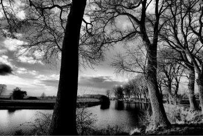

Het trouwfeest bestaat uit twee delen. Vrijdag 27 juni trouwen we voor de wet, en zaterdag 28 juni trouwen we omdat we elkaar graag zien. Om jullie een idee te geven van wat jullie te wachten staat bekijk je best eens onze planning!
Wij passen niet in een typische trouwzaal, en de stress van een klassiek trouwfeest zien wij ook niet
zitten. Dus hebben we beslist om het helemaal te
doen zoals wij er van dromen!
Je zou kunnen zeggen dat we een pic-nic-chique
trouwfeest geven. Zo heeft onze eclectische stijl toch ook een naam. We willen een beetje
genieten van het hopelijke mooie weer op die dag dus zullen we ook buiten wat vertoeven. En ons geliefde HUSET kan niet ontbreken dus plannen we de rest van ons feest daar.

JAWEL! Maak je maar klaar voor een pic-nic/alternatieve ceremonie en receptie in een wei naast de leie in Deinze! Wij zorgen voor dekentjes, stoeltjes en versnaperingen. Wie eens in het water wil springen kan dat zeker doen! Ons lijk er niets leukers dan even gezellig te vertoeven in een mooi stukje natuur samen met jullie! Wij gaan alvast met de fiets naar daar. Dus wie ons wil vergezellen kan dat zeker!
p.s. bij slecht weer gaat dit in HUSET door.
DAG #1
VRIJDAG 27 JUNI
15:20 - Stadhuis van Gent
16:00 - Wedding-Wafelbak-Buffet
//
DAG #2
ZATERDAG 28 JUNI
11u30 - Afspraak aan HUSET om met de fiets te vertrekken naar de leie!
13:00 - Afspraak aan de Hoge
Bomen aan de Leie (Deinze)
14:00 - Alternatieve ceremonie
15:00 - 17:00 Pic-nic-receptie
18:30 - Afspraak in HUSET
19:30 - Diner
22:00 - Dansfeest
's Avonds gaan we verder in HUSET. Het achterhuis wordt omgetoverd tot een heuse feestzaal! Waar jullie kunnen komen eten, drinken, lachen, babbelen en dansen! In het café kan je dan rustig even bekomen als het allemaal even te veel wordt. We zorgen voor wat speciale gebeurtenissen die de avond nog leuker maken!
Wij zijn al helemaal enthousiast!
Hopelijk jullie ook! :)
Stadhuis van Gent
Botermarkt 1
9000 Gent
Parkeren kan je in de parking van de Vrijdagsmarkt.
Ook op de kouter en op
St-Michiels zijn er ondergrondse parkings. Te voet kan je dan gemakkelijk naar het stadhuis wandelen.
Ben je met de trein? Dan neem je best de tram 1 richting centrum en stap je af aan de korenmarkt. Je bent er dan vlakbij!
HUSET
Hoogstraat 49
9000 Gent
Parkeren doe je best in de parking op St-Michiels of de ramen.
Deze bevinden zich beiden op wandelafstand van HUSET.
Neem je de trein neem je best tram 1 richting centrum en stap je af op de korenmarkt of de
burgstraat.
De hoge bomen aan de Leie
Maargemdijk
9800 Deinze
Parkeren kan je beperkt aan de maaigemdijk. Maar dat kan snel volstaan en dan is het moeilijk keren. Je kan ook parkeren aan het Ooidonck kasteel en te voet 10 minutjes wandelen.
Wij verkiezen de fiets! Wij vertrekken aan HUSET en het duurt ongeveer een klein uurtje om daar te geraken.
En sowieso plezier verzekerd! :)
Locatie